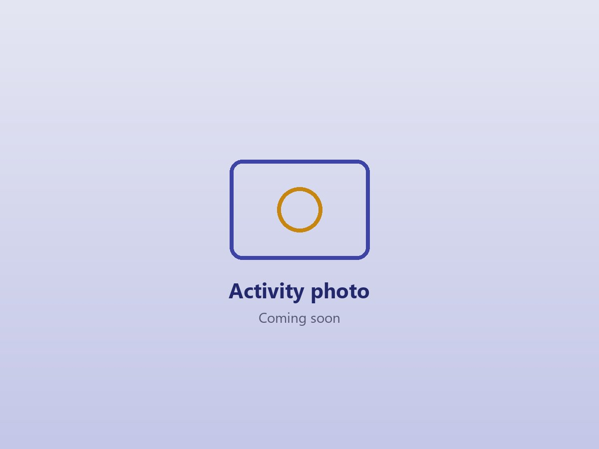

Teaching Portfolio
Lesson planning, teaching materials and the strategies I'm building from what I've observed and practised in two schools.
Brighter Futures

Curriculum Knowledge
Through my school observation tasks, I've studied how the Basic School Curriculum is organised and how to plan lessons that build on what learners already know.

Teaching Skills Development
How I'm putting what I've learned into my own planning and teaching.
Planning from Simple to Complex
I plan my lessons from simple to complex, linking new ideas to what learners already know and using real-life examples before introducing abstract concepts.
Supporting Every Learner
I give more individual support to learners who struggle, use simple language and examples they can relate to, and create activities that engage both fast and slow learners.
Strategies in My Toolkit
Strategies I've seen work in the classroom and am building into my own teaching.
Achieve More
Evidence Gallery
Samples of teaching resources and classroom activities that demonstrate my practice.


Teaching in Action

A short description of a lesson I taught will go here: the topic, how I got learners involved and what they took away from it.
My Portfolio Snapshot
A collection of my teaching resources, reflective journals and mentor score sheets that showcase my approach to teaching and the impact I aim to make in learners' lives.